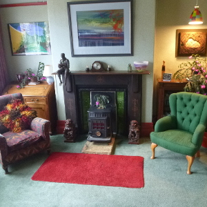

- Home
- Cost
- FAQ
- Contact
Counselling and Supervision in Leeds

Therapy room in Headingley, Leeds
Relaxed, friendly talking
28 years
People come to counselling when they are stuck. Perhaps the same problem is happening over and over again. Perhaps you’ve tried everything you can think of. Perhaps you’re struggling with feelings you can’t control or understand. Perhaps you want to get a grip on some behaviour that needs to change. Perhaps you have worries about what kind of person you are. Counselling is ideal for these sorts of problems.
Talking to a counsellor gives you a chance to reflect on what’s going on for you. I will not judge or criticise you. I will make suggestions, but I am mainly interested in helping you come up with new options of your own.
The only way to find out what counselling feels like is to try it for yourself. You are welcome to book an initial meeting. We can discuss what you are wanting and I will make suggestions. After this meeting you can decide if you want to work with me further.
Nigel White
MSc, Registered Member MBACP (Accred)